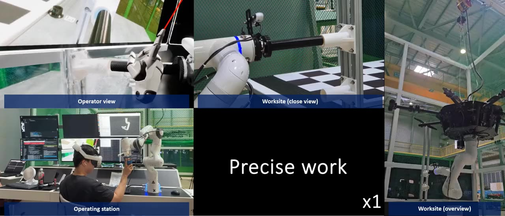

Passivity-Based Teleoperation over Unreliable Networks
Keeping robot-arm teleoperation stable when packets arrive late, out of order, or not at all

Motivation. PD (spring-damper) coupling is the standard way to link robots over a network, but its stability guarantees usually assume continuous time and robots with matching joints.
Contribution. Closed-form passivity conditions in task space that hold under sampling, delay, packet loss, duplication and reordering, validated on two 7-DoF arms.